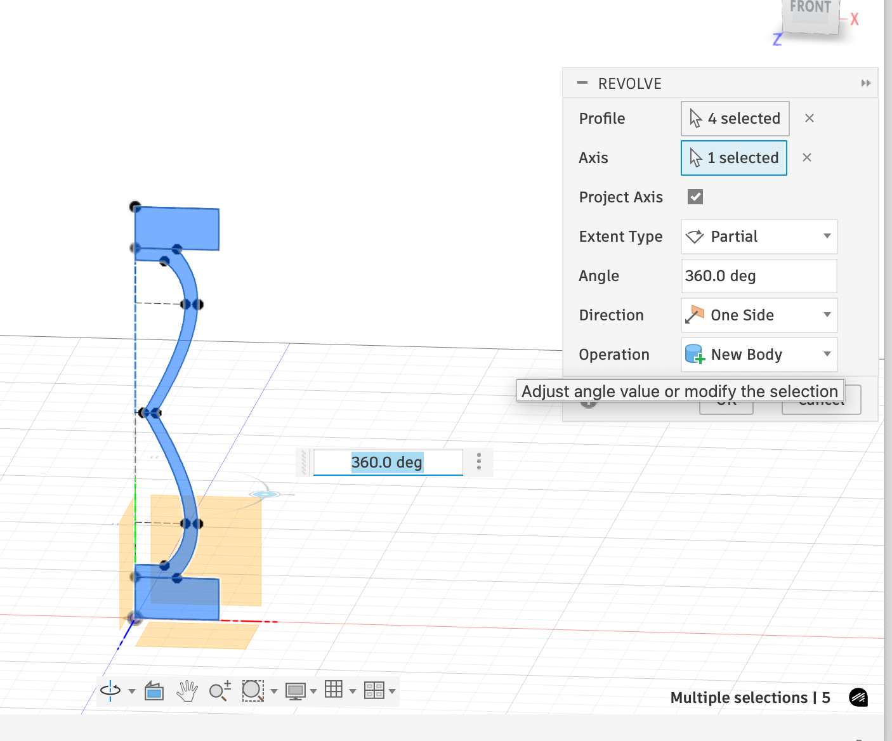
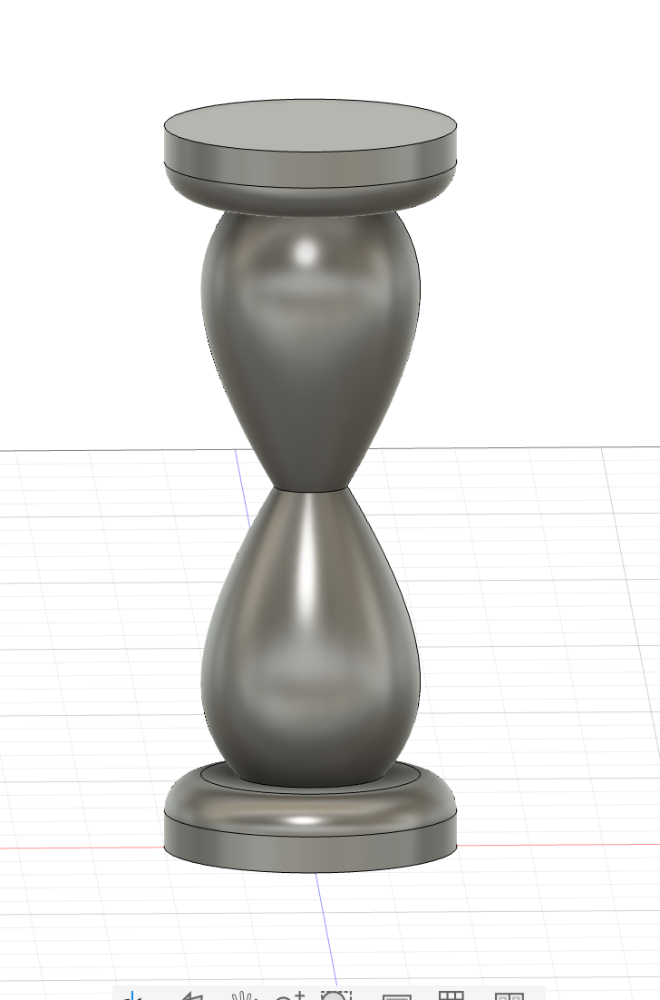
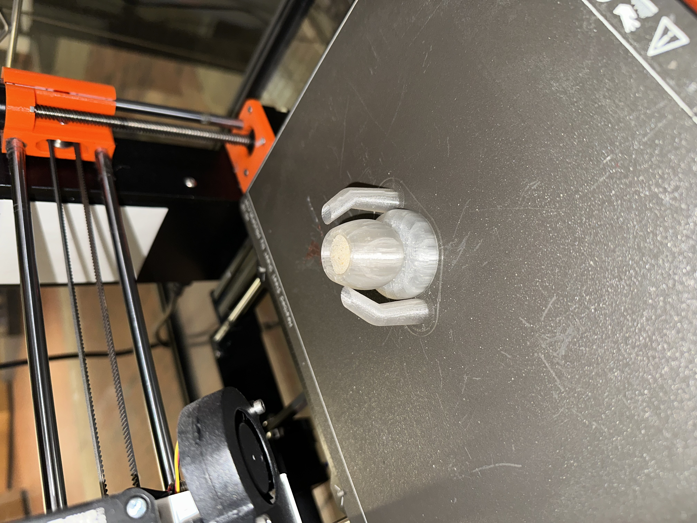
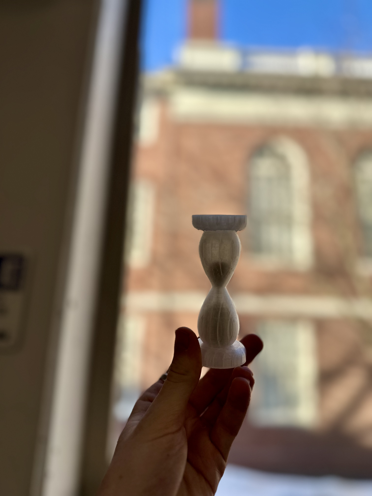
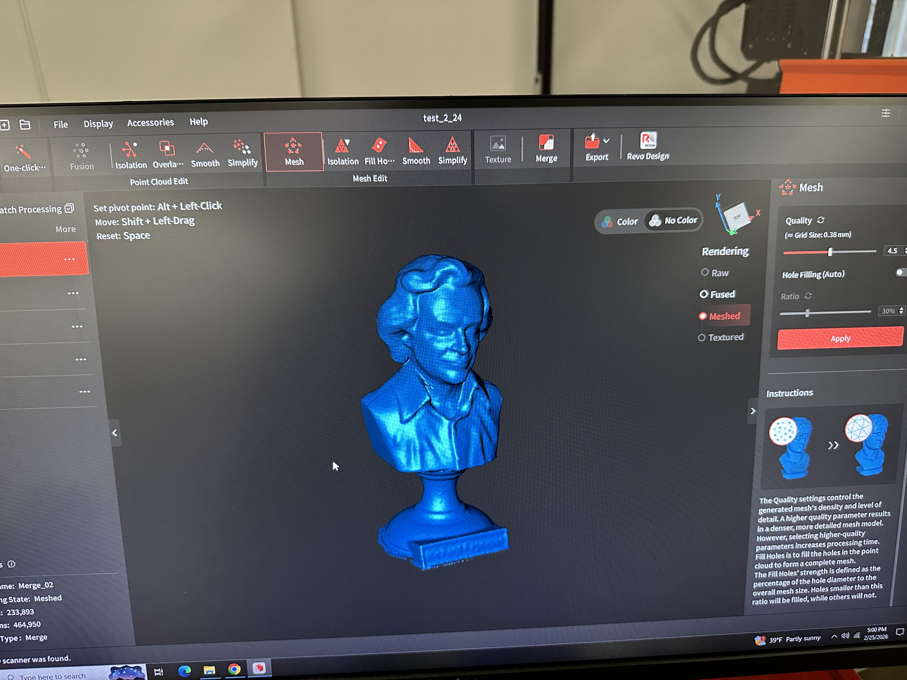
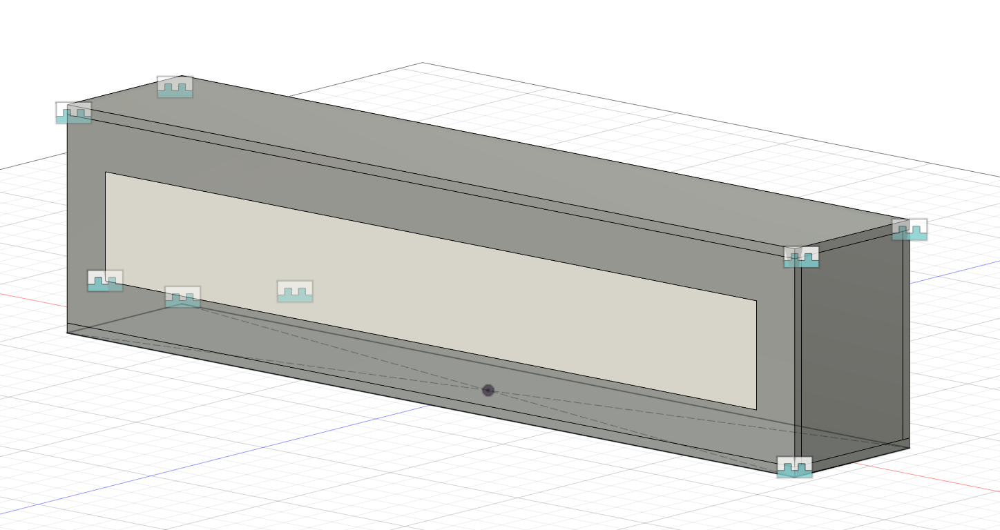
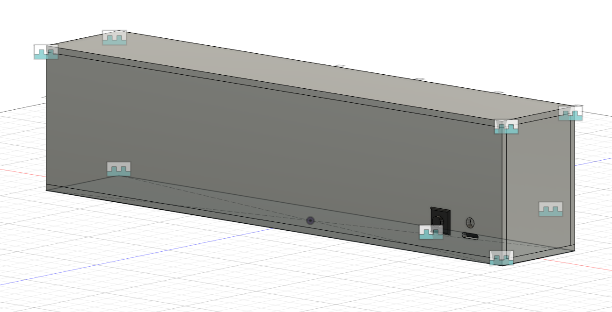
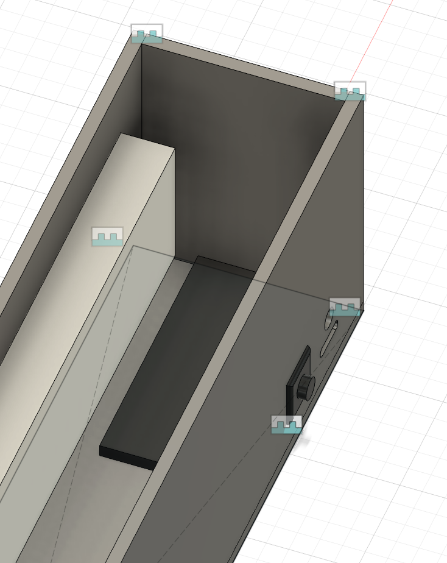

<div class="textcontainer typewriter-texture">
<p class="margin"> </p>
<h3>Week 5: 3D Design & Printing</h3>
<h4>3D Design and Printing: Emotional Cooldown Hourglass</h4>
<p>I thought it would be cool to create something "functional," so I designed an hourglass with a relatively transparent filament. My plan was to then pause the print mid-print, add sand, then finish the print, such that the sand is forever enclosed in the hourglass.</p>
<p>I originally planned to have the center diameter of the hour glass as 5mm diameter and the "glass" walls 1mm thick, but quickly realized this would lead to a relatively weak structure that might crumble, so I scaled up to a 3mm thick wall. I designed the profile of the hourglass and then used the rotate feature in fusion to turn it into a 3D model.</p>
<p></p>
<p></p>
<p>About midway through the print, I poured in some standard sand that I found in the lab.</p>
<p></p>
<p>After the print finished and I removed the supports, this is what the end product looked like.</p>
<p></p>
<p>The sand takes approximately 12 seconds to filter from one side of the hourglass to the other. During a difficult conversation with a family member or someone you love, taking a moment to respond in order to avoid being emotionally reactive can be prudent. This 12-second hourglass can be perfect for taking a moment to pause during these exchanges.</p>
<p class="margin"> </p>
<div class="flexrow">
<a id="btn" href="./Hourglass.f3d" download>Download Fusion File
</a>
</div>
<p class="margin"> </p>
<p class="margin"> </p>
<div class="flexrow">
<a id="btn" href="./hourglass.stl" download>Download STL File
</a>
</div>
<p class="margin"> </p>
<p class="margin"> </p>
<div class="flexrow">
<a id="btn" href="./hourglass.gcode" download>Download gcode
</a>
</div>
<p class="margin"> </p>
<h4>Scanning: He's a Feynman</h4>
<p>I thought it would be amusing to 3D-scan something 3D-printed, so I scanned a 3D-printed Richard Feynman bust I bought several years ago. I took 3 scans, resting at different angles (upright, face down, bottom up). It was fairly difficult to remove the noise, but after several hours, was able to get it to a place I liked it.</p>
<p></p>
<div style="width:100%; height:60vh; max-height:600px;">
<iframe
id="vs_iframe"
src="https://www.viewstl.com/?embedded&url=https://calebcapoccia.github.io/ps70/05_3Ddesign/Feynman_Mesh.stl"
style="border:0;margin:0;width:100%;height:100%;"
loading="lazy">
</iframe>
</div>
<p class="margin"> </p>
<div class="flexrow">
<a id="btn" href="./Feynman_Mesh.stl" download>Download STL File
</a>
</div>
<p class="margin"> </p>
<h4>Final Project</h4>
<p>I decided to pursue the voice-to-text for cars idea. I originally thought I would start out with a built in microphone and try to do the voice-to-text processing locally on the microcontroller, then expand to use a mobile app. However, given that good voice-to-text libraries would require much more memory than I could fit on an ESP32 and that I would likely move to using a phone anyway, I decided to jump straight to utilizing the phone for the microphone and voice processing.</p>
<h5>3D Model</h5>
<p>Here is what my 3D model looks like. In the first photo we can see the daisy chained LEDs represented in white, housed with additional space around the lights on the front.</p>
<p></p>
<p>On the back, we have the button for power, along with USB-C slots for charging and a space for an LED light to indicate charging and on/off status.</p>
<p></p>
<p>Inside, the black object represents where the ESP32 would sit. As we can see, there is ample space to house the microcontroller, battery and wiring.</p>
<p></p>
<p class="margin"> </p>
<div class="flexrow">
<a id="btn" href="./initial_3d_design.f3d" download>Download Fusion File
</a>
</div>
<p class="margin"> </p>
<h5>Bill of Materials</h5>
<ul>
<li>4 32x8 Matrix LEDs (like <a href="https://www.amazon.com/dp/B08KS68GYZ?ref=ppx_yo2ov_dt_b_fed_asin_title" target="_blank">this one</a>). I will use 2 for the front and 2 for the back windshields.</li>
<li>2 small buttons for turning the displays on and off</li>
<li>3D printed housing pieces to hold interior components in place</li>
<li>Piece that connects to suction cup for dashboard</li>
<li>Piece that connects to suction cup for windshield</li>
<li>4 suction cups</li>
<li>Rechargeable batteries with USB-C connection</li>
<li>2 ESP32 microcontrollers</li>
<li>Plywood for initial housing</li>
<li>High quality plastic for CNC milling for the final housing</li>
</ul>
<h5>Timeline</h5>
<ul>
<li>By EOD Wednesday Wednesday 25th, complete the initial MVP with one display housed in a simple material like wood, along with a primitive app. In the app, tapping a button once will start the recording, and tapping it again will stop recording, then sending it to a voice to text library, which will then transmit the text to an ESP32.</li>
<li>By April 8th, extend the concept to both the front and back windows by using 2 ESP32s for Bluetooth/WiFi communication, with selection buttons for the front and back windows. Additionally, to have figured out how to affix the displays securely to windows/dashboard.</li>
<li>By April 15th, finalize housing and physical components, including the button and rechargeable battery.</li>
<li>By April 29th pivot to using high quality materials, crafted with the CNC machine, to give it a finalized product feel</li>
<li>After April 29th, I will use additional time to perform testing and implement any final refinements.</li>
</ul>
<p class="margin"> </p>
</div>